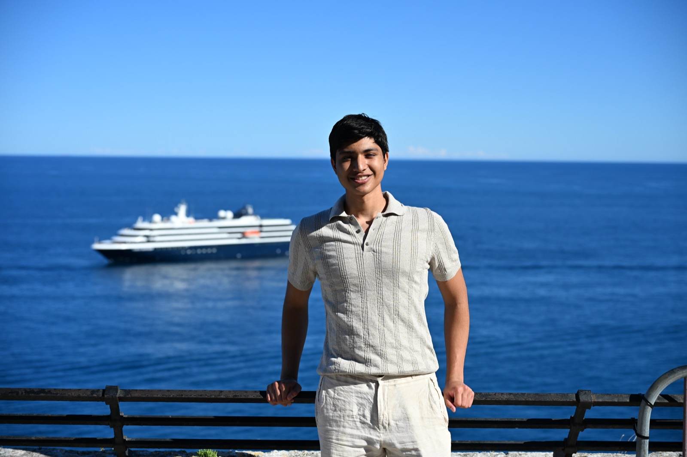
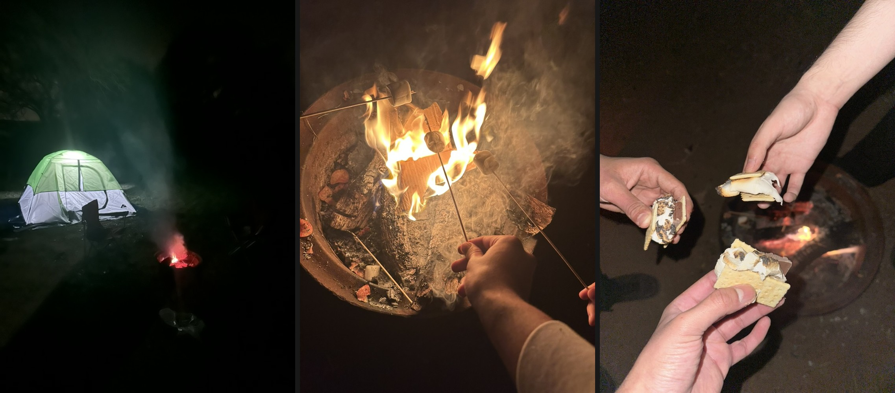

Adarsh Rajesh
I am a junior studying computer science honors and business honors (CSB) at the University of Texas at Austin. I'm interested in: AI/ML, systems, backend development, and quantitative research.
I enjoy building dependable systems and studying how models retrieve, reason, and learn. Feel free to get in touch.

Experience
-
AI Engineering Intern · Alpha AI Engineering
I studied different ways to externalize an LLM’s factual knowledge into a fact store, comparing MemorySplit with dense transformers across factual recall, compositional reasoning, training efficiency, and missing-fact behavior. I also fine-tuned Qwen3-4B with QLoRA to make its tutoring responses more consistent with a prescribed pedagogy. -
Student Research Member, Agentic AI · UT Austin
Studied autonomy boundaries, prompt injection, tool misuse, multi-agent scaling, and guardrails based on validation, constraints, and human oversight. -
Research Member, Commodity Forecasting · Texas Global Macro Team
Deployed N-HiTS and N-BEATS models in Python and led a quantitative study of tea prices using trade, weather, and economic indicators.
Education
-
B.S. Computer Science & Business Honors
Computer science honors and business honors (CSB); interests include machine learning, computer architecture, algorithms, systems, and finance.
Projects
-
Out-of-Order CPU
SystemVerilog · Computer Architecture · RTL Design
A 64-bit processor with register renaming, reservation stations, a reorder buffer, load-store forwarding, and in-order commit. -
Screenshot Steps Helper
TypeScript · Cloudflare Workers AI · Durable Objects
Turns screenshots and a goal into click-by-click UI navigation steps while preserving session context across follow-up questions. -
Tinker Assembler + Simulator
C · Compilers · Custom ISA
A C toolchain that assembles a custom 64-bit ISA into object files and executes programs on a simulator, including a matrix-multiply demo. -
Two-Level Cache Simulator
C · Computer Architecture · Memory Hierarchy
Models split L1 caches over an inclusive L2 with write-back, write-allocate, and back-invalidation on eviction.
Fun

I’m from Austin, Texas. I enjoy playing tennis, going camping, and sometimes eating an unreasonable amount of Greek yogurt. I also recently got a picture with the goat, which was a pretty good day.